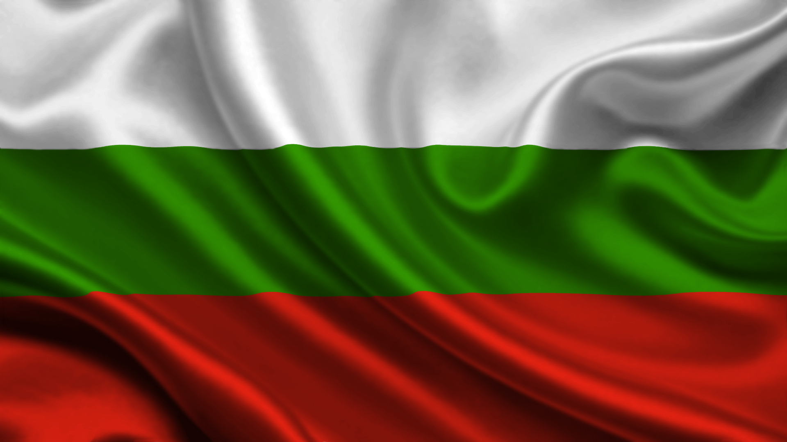

New Bulgarian University
New Bulgarian university es el único Campus de Excelencia de máxima categoría Internacional existente en la mitad sur de Bulgaria.Es un espacio de generación de conocimientos y de innovación creado por la Universidad de Sofia, en el que participan como socios agregados más de 150 agentes. New Bulgarian University es una universidad diferente en todos los sentidos de la palabra. Nuestros alumnos pueden inventarse sus propias asignaturas. Con eso damos un toque personalizado a los espíritus libres que nunca encuentran su sitio en el mundo. Te invito a que realices nuestro test para poder entender mejor nuestra política de implantar conocimientos.